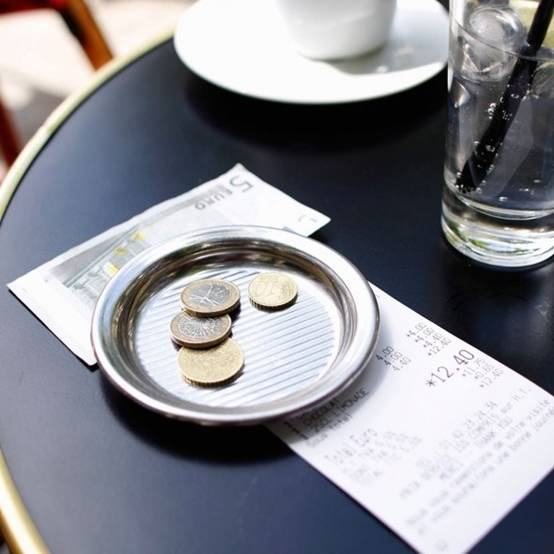

chapter19.3--handout
Background Information
International Road Cycling Race 世界三大国际公路自行车赛事
我们最近两天的内容中都出现了自行车比赛的场景。今天的内容中出现的环法自行车赛更是一次盛会。(The Tour de France was the greatest sporting event in the world. Following and organizing the road races had made him know France. ) 今天我们就来一起了解一下世界三大国际公路自行车赛事吧～
1. 环法自行车赛
（英语：Tour of France，法语Tour de France）
是公路自行车运动中世界影响最广、规模最大比赛水平最高的国际自行车大赛。1903年的7月1日举办了第一届环法自行车赛。每次赛期23天总数21段,平均赛程超过3500公里。整个赛程每年不一但都是环绕法国一周经常也出入周边的国家，近几十年来终点总设在巴黎的香榭丽舍大道。
比赛全程分成许多段,从一个城镇到下一个，每一段分别计时排名。所有段成绩累计起来决定每一位赛手的总成绩。所以冠军有赛段冠军和总冠军有个人冠军和团体冠军，并设有总成绩排名（按比赛时间计算）积分排名、年轻车手排名等。在所有的冠军车手名单中，7次冠军得主阿姆斯特朗无疑是环法历史上一位奇迹般的标志性人物。
环法自行车赛，以及环意自行车赛和环西班牙自行车赛（Vuelta Espana），是三个最主要的分段公路自行车赛。其余两个赛事虽然在欧洲很著名，但只有环法自行车赛是真正世界级的体育大赛，名声甚至超过公路自行车世界锦标赛。
GC：指的是General Classification即积分总排名。
PC：即冲刺积分榜，Points classification的缩写。
MC：即爬坡积分榜，Mountains classification的缩写。
ITT：指的是Individual Time Trial即个人计时赛。
2. 环西班牙自行车赛
环西赛始于1935年,自1955年起每年举办。比赛历时三周，每天进行一个赛段，共计21个。整个过程中只有两天无赛日供车手休整，总赛程为300公里左右。环西自行车赛按比赛形式分为个人计时赛，团体计时赛和大组赛；按比赛道路性质可分为平地赛段和山地赛段这点和环法环意没有区别。环西赛每年的起点城市是不同的路线也有所变化，但终点始终设在首都马德里。
3. 环意大利自行车赛
环意大利自行车赛（意大利语:Girod'italia'）诞生于1909年，比赛的时间定在盛春时节的五月。环意也有四种冠军衫：粉衫（欧洲俗称玫瑰衫），总成绩第一的车手；绿衫，山地赛段积分最多的车手；蓝衫，在INTERGIRO的计时中获得最高时间的车手；紫罗兰衫在比赛中获得积分最多的车手。
Vocabulary
buoyant
adj. 有浮力的，易浮的 (tending to float on a liquid or rise in air or gas)
原文：The water was buoyant and cold.
海水浮力很大，很冷。
💧buoyant 还有“心情愉快的；生气勃勃的”的意思，比如：She was in a buoyant mood and they were looking forward to their new life.
她心情愉快，他们正在憧憬未来的新生活。
rigidly
adv. 严格地 (in a rigid manner)
原文：The personages of this establishment were rigidly selectioned.
这家旅馆的从业人员都经过严格挑选。
💧rigidly 还有“固执地，刻板地”的意思，比如：Why do you have to rigidly adhere to such out-dated ideas?
你为什么非要死板地遵守这么过时的观点？
Crush Your Problems

After all, though, it wasn't bad to get back to Paris. There is only one Paname.
不管怎么说，能回到巴黎毕竟不坏。只有一个巴纳姆。
💧知识拓展
Paname是巴黎的别称。这个叫法盛行于在巴黎郊区居住的年轻人之间，因为他们不愿意直接说自己住在城郊（the suburb of Paris）而不是市中心（Paris），所以就干脆说是Paname.


I swam back to the surf and coasted in, face down, on a big roller, then turned and swam, trying to keep in the trough and not have a wave break over me.
我朝一个浪头游回去，脸朝下顺势滑进一个巨浪，然后我转身游水，尽力保持在波谷的位置，不让浪头迎面打来。
💧表达精讲
①coast 作名词指“海岸”，作动词则是“（汽车或自行车）靠惯性滑行”，比如：Bev coasted downhill on her bicycle.（贝夫骑着自行车沿山坡滑行而下。）这里的coast in...on a big roller就是“顺势滑进一个巨浪”（roller指“巨浪”, a long powerful wave）.
②to keep in the trough “保持在波谷的位置”，trough也可以指“（企业或经济的）低潮，萧条阶段”，常和peak一起连用，比如：There have been peaks and troughs in the long-term trend of unemployment.（长期以来失业率一直时起时伏。）

In the morning I had breakfast in the dining-car and watched the rock and pine country between Avila and Escorial.
第二天早上我在餐车上吃的早饭，看着阿维拉和埃斯科里亚尔之间那一段岩石和松林地带。
💧知识拓展
①Avila（阿维拉）是西班牙旧卡斯提尔地区阿维拉省省会，在马德里以西，保存有十三至十五世纪大教堂、罗马式王宫和修道院等古迹。
②Escorial（埃斯科里亚尔）为马德里附近一处著名的大理石建筑群，为十六世纪西班牙国王腓力二世所建，包括宫殿、教堂、修道院和陵墓等建筑。

I saw Madrid come up over the plain, a compact white skyline on the top of a little cliff away off across the sun-hardened country.
我看到马德里从平原上升起来，在被太阳晒得铁硬的乡野对面，一个小小的悬崖上面一道紧凑的白色地平线。
💧表达精讲
①come up over the plain “马德里从平原上升起来”；这里形容距离越来越近，马德里开始出现在视野里的平原上；
②a compact white skyline “一道紧凑的白色地平线”；这里的skyline是指海和天相交的地平线或天际线；compact原义是“紧凑的”（put together firmly and closely）, 这里可以理解为“海和天紧密相连”；
③a little cliff away off across the sun-hardened country 需要分清句子成分来理解意思：首先away off是副词短语，表示“距离遥远地”；而across the sun-hardened country则是介词短语，表示“在被太阳晒得铁硬的乡野对面”；这两个短语修饰的中心词都是a little cliff.

Of that as yet I was undecided...
这个我还没决定……
💧句式拆解
这句话的主句部分发生了倒装，还原成正常语序是I was undecided of that.（that指上文提到的“Did I want to stay myself in person in the Hotel Montana?”）
💧表达精讲
as yet 是一个插入语，表示“到目前为止；到过去某个时间为止”（until now or a particular time in the past）, 在这里可以理解为up to now.

Nevertheless I would welcome the upbringal of my bags.
不过我还是希望有人能把我的行李先拿上来。
💧表达精讲
upbringal 这个词是海明威自创的，可以理解为the act of bringing up sth. “把某物提到楼上”。
Content Analysis
Jake和一位自行车生产商的团队经理之间的对话也非常有意思。这位经理人对自行车运动比赛的狂热和盛赞一如Jake等其他人对斗牛的追捧和敬仰，比如从春天到秋天他都和自行车手在赛道上一起度过（All spring and all summer and all fall he spent on the road with bicycle road-racers）.
但对于Jake来说，在一年一度的斗牛盛宴之外，他都在忍受肤浅乏味的生活，以下关于他在海里潜水的描写就可以看作一段隐喻——
💧Clue 1:Jake has to experience the ups and downs of the boring life.
Evidence 1:Then in the quiet water I turned and floated. Floating I saw only the sky, and felt the drop and lift of the swells.
到了平静的海域以后，我就仰面朝天浮在水面上。这样浮着，眼中只能看到青天，身体则感受到大浪的起起伏伏。
Evidence 2:It felt as though you could never sink. I swam slowly, it seemed like a long swim with the high tide, and then pulled up on the raft and sat, dripping, on the boards that were becoming hot in the sun.
感觉就仿佛你永远都不会沉底。我慢慢地游着，看似跟满潮一道进退，游了好长一段距离，然后爬上木排，水淋淋地坐下来，板条正在被太阳慢慢烤热。
回到旅馆后，Jake收到了两封来自Brett的电报，分别从巴黎和潘普洛纳转来（Brett不知道Jake的行踪，所以发了两封）。在电报中，Brett询问Jake是否能赶到西班牙马德里的蒙大拿旅馆，并且声称自己遇到了麻烦。Jake马上订好了晚上的一趟特快准备前往马德里，但此时他的心态也非常微妙，因为他当初有意把Brett送入Romero的怀抱，所以他也一直预料着最后会有矛盾发生——
💧Clue 2:Jake has been expecting this.
Evidence 1: Well, that meant San Sebastian all shot to hell. I suppose, vaguely, I had expected something of the sort.
哎，这也就意味着圣塞瓦斯蒂安的一切都泡了汤。我想，我是模模糊糊地盼着会发生这等事的。
Evidence 2:That seemed to handle it. That was it. Send a girl off with one man. Introduce her to another to go off with him. Now go and bring her back. And sign the wire with love. That was it all right.
这么做看来就成了。就这么回事。把一个姑娘跟一个男人送走。又把她介绍给另一个男人，跟他一起走。现在再去把她给领回来。还在电报上署名“爱你的”。就是这么回事，挺好的。
明天我们将迎来这本书的完结，现在故事只剩下最后一个悬念：如果Brett和Romero之间出现了矛盾，她是否会选择和Jake再续前缘呢？还是又去另觅他欢？
Today's Bonus
💧Tips in Western Countries 西方的小费文化
我们的内容中出现过很多次付小费的情节。昨天的内容中Jake在法国餐馆和旅馆都付给了侍者小费（tips），今天的内容中Jake也给了送来电报的看门人小费（I tipped the concierge and read the message again...The concierge stood there waiting for another tip, probably.).那么在西方国家为什么要支付小费呢？我们来一起了解一下吧～
西方国家的小费文化起源于18世纪的伦敦，当时的伦敦餐馆由于吃饭的人多，餐馆服务员少，有的时候无论上菜还是收拾碗筷都很慢，所以这时候桌上搁置了一个碗，碗上边有个纸条，写着保证快速服务（to insure prompt service），首字母的缩写就是tips.
在国外，小费的概念是对你工作给予的肯定。他们觉得，你的服务做的很好，这钱是你应得的。由于服务业人员的基本工资非常低，甚至低于当地法定最低工资水平。他们需要靠小费填补最低工资差额，小费成为他们的主要收入来源，是工资的一部分，并且要交税。
这种概念是西方国家强调个人个性的一种独立，就是说服务行业人员给你提供了服务，那么他们并不是基于人情基础上给你提供的，他们目的很明确，就是为了赚钱，你应该给小费。
给小费是西方礼仪中非常重要的一部分，一般说，当你得到别人的服务时就应该给小费，但并不是所有都需要。给小费的人员主要包括hotel workers 酒店的工作人员、doormen 门卫、bellman 行李员、maid 清理房间的女服务员、dining room staff 餐厅服务员等。

在餐馆就餐后，一般是要给这段餐钱的10%到15%的小费，而给小费的方式一般有两种：结账时，会提前出现一个“Gratuity”的字样，也就是小费，然后自己输入金额；还有就是账单下面会写有例如“service charge12%”这样类似的字样。如果你看到“service comprise”，那就意味着“已包含服务费”，就不需要再额外给小费了。
至于乘出租车方面，大部分城市的通行规则是，乘坐装有计价器的正规持照出租车时，应该给出租车司机10%的小费。
给小费应该当面给还是悄悄留下呢？能尽量当面给，就当面给，再给对方服务员一个微笑，说声thank you！
在中国和日本都没有小费文化的，所以一般都不需要给小费。在日本如果付小费给服务员会是一种冒犯。由于风俗不同，各个国家的消费文化存在着差异。
在西方国家小费不是一种施舍，而是一种文化。